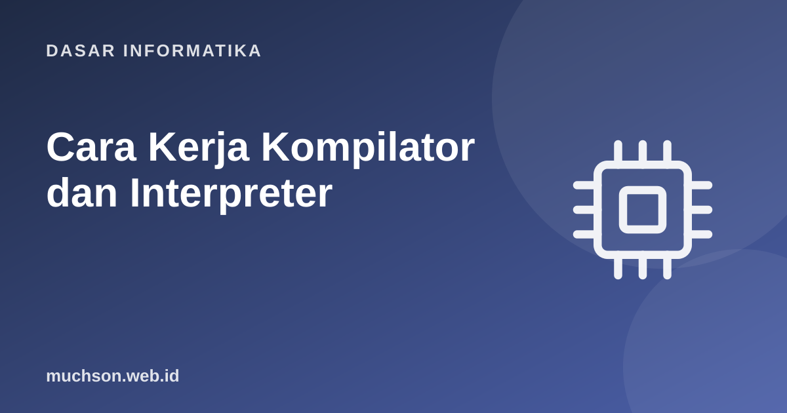

Beranda › Artikel › Dasar Informatika
Dasar InformatikaCara Kerja Kompilator dan Interpreter: Lexer, Parser, Eksekusi
Bagaimana komputer "mengerti" kode yang Anda tulis? Dari teks mentah menjadi tindakan, ada rantai tahap: memecah teks menjadi token, menyusunnya menjadi pohon sesuai tata bahasa, lalu menjalankan atau menerjemahkan pohon itu. Dengan membangun interpreter kalkulator mini, tahap-tahap yang tampak ajaib itu menjadi sederhana.
Sebaiknya sudah paham: rekursi, kelas dan struktur data dasar

Setelah membaca dan mencoba materi ini, Anda mampu:
- membedakan kompilator, interpreter, dan pendekatan hibrida (bytecode, JIT)
- menjelaskan tahap: analisis leksikal, sintaksis, semantik, pembangkitan kode
- menulis lexer dan parser rekursif turun untuk ekspresi aritmetika
- menggambarkan pohon sintaks abstrak (AST) dan mengevaluasinya
- menjelaskan presedensi operator lewat tata bahasa
Dari teks ke eksekusi
| Pendekatan | Cara kerja | Contoh |
|---|---|---|
| Kompilator | Menerjemahkan seluruh program ke kode mesin sebelum dijalankan | C, C++, Rust, Go |
| Interpreter | Membaca dan menjalankan program baris atau pohon secara langsung | Shell, versi awal Ruby |
| Hibrida: bytecode + VM | Dikompilasi ke bytecode lalu dijalankan mesin virtual | Python (CPython), Java (JVM) |
| JIT (just-in-time) | Bytecode yang sering dijalankan dikompilasi ke kode mesin saat berjalan | JVM HotSpot, V8 (JavaScript), PyPy |
Tahap 1: lexer (analisis leksikal)
Lexer membaca karakter dan mengelompokkannya menjadi token: unit bermakna seperti angka, operator, dan kurung. Spasi biasanya dibuang.
import re
POLA = [
("ANGKA", r"\d+(?:\.\d+)?"),
("TAMBAH", r"\+"), ("KURANG", r"-"), ("KALI", r"\*"), ("BAGI", r"/"), ("PANGKAT", r"\^"),
("KURBUKA", r"\("), ("KURTUTUP", r"\)"),
("SPASI", r"\s+"),
]
REGEX = re.compile("|".join(f"(?P<{n}>{p})" for n, p in POLA))
def tokenisasi(teks):
token, i = [], 0
while i < len(teks):
m = REGEX.match(teks, i)
if not m:
raise SyntaxError(f"karakter tak dikenal {teks[i]!r} pada posisi {i}")
if m.lastgroup != "SPASI":
token.append((m.lastgroup, m.group()))
i = m.end()
return token
print(tokenisasi("2 + 3 * (4 - 1.5)"))
try:
tokenisasi("2 + $3")
except SyntaxError as e:
print("galat leksikal:", e)[('ANGKA', '2'), ('TAMBAH', '+'), ('ANGKA', '3'), ('KALI', '*'), ('KURBUKA', '('), ('ANGKA', '4'), ('KURANG', '-'), ('ANGKA', '1.5'), ('KURTUTUP', ')')]
galat leksikal: karakter tak dikenal '$' pada posisi 4
Tahap 2: parser dan tata bahasa
Tata bahasa menyatakan bentuk kalimat yang sah. Untuk ekspresi aritmetika, presedensi operator terkodekan dalam tingkatan aturan: yang mengikat lebih kuat berada lebih dalam.
ekspresi → suku ( ("+" | "-") suku )* // paling lemah: + dan -
suku → faktor ( ("*" | "/") faktor )* // lebih kuat: * dan /
faktor → unit ( "^" faktor )? // pangkat, rapat ke kanan
unit → ANGKA | "(" ekspresi ")" | "-" unit // angka, kurung, minus unaryimport re
POLA = [("ANGKA", r"\d+(?:\.\d+)?"), ("OP", r"[-+*/^()]"), ("SPASI", r"\s+")]
REGEX = re.compile("|".join(f"(?P<{n}>{p})" for n, p in POLA))
def tokenisasi(teks):
hasil, i = [], 0
while i < len(teks):
m = REGEX.match(teks, i)
if not m: raise SyntaxError(f"karakter tak dikenal {teks[i]!r}")
if m.lastgroup != "SPASI": hasil.append((m.lastgroup, m.group()))
i = m.end()
return hasil
class Parser:
def __init__(self, token): self.t, self.i = token, 0
def lihat(self): return self.t[self.i][1] if self.i < len(self.t) else None
def ambil(self): tok = self.t[self.i]; self.i += 1; return tok
def ekspresi(self): # suku (('+'|'-') suku)*
kiri = self.suku()
while self.lihat() in ("+", "-"):
op = self.ambil()[1]
kiri = (op, kiri, self.suku())
return kiri
def suku(self): # faktor (('*'|'/') faktor)*
kiri = self.faktor()
while self.lihat() in ("*", "/"):
op = self.ambil()[1]
kiri = (op, kiri, self.faktor())
return kiri
def faktor(self): # unit ('^' faktor)?
dasar = self.unit()
if self.lihat() == "^":
self.ambil()
return ("^", dasar, self.faktor()) # rekursi ke kanan: 2^3^2 = 2^(3^2)
return dasar
def unit(self):
if self.lihat() == "-": self.ambil(); return ("neg", self.unit())
if self.lihat() == "(":
self.ambil(); e = self.ekspresi()
if self.lihat() != ")": raise SyntaxError("kurung tutup hilang")
self.ambil(); return e
jenis, nilai = self.ambil()
if jenis != "ANGKA": raise SyntaxError(f"token tak terduga {nilai!r}")
return float(nilai) if "." in nilai else int(nilai)
def parse(teks):
p = Parser(tokenisasi(teks)); pohon = p.ekspresi()
if p.i != len(p.t): raise SyntaxError(f"sisa token: {p.t[p.i:]}")
return pohon
for e in ("2 + 3 * 4", "(2 + 3) * 4", "2 ^ 3 ^ 2", "-(1 + 2) * 3"):
print(f"{e:<14} -> {parse(e)}")2 + 3 * 4 -> ('+', 2, ('*', 3, 4))
(2 + 3) * 4 -> ('*', ('+', 2, 3), 4)
2 ^ 3 ^ 2 -> ('^', 2, ('^', 3, 2))
-(1 + 2) * 3 -> ('*', ('neg', ('+', 1, 2)), 3)
Tahap 3: evaluasi (interpreter)
import re
POLA = [("ANGKA", r"\d+(?:\.\d+)?"), ("OP", r"[-+*/^()]"), ("SPASI", r"\s+")]
REGEX = re.compile("|".join(f"(?P<{n}>{p})" for n, p in POLA))
def tokenisasi(teks):
hasil, i = [], 0
while i < len(teks):
m = REGEX.match(teks, i)
if not m: raise SyntaxError(f"karakter tak dikenal {teks[i]!r}")
if m.lastgroup != "SPASI": hasil.append((m.lastgroup, m.group()))
i = m.end()
return hasil
class Parser:
def __init__(self, t): self.t, self.i = t, 0
def lihat(self): return self.t[self.i][1] if self.i < len(self.t) else None
def ambil(self): x = self.t[self.i]; self.i += 1; return x
def ekspresi(self):
kiri = self.suku()
while self.lihat() in ("+", "-"): op = self.ambil()[1]; kiri = (op, kiri, self.suku())
return kiri
def suku(self):
kiri = self.faktor()
while self.lihat() in ("*", "/"): op = self.ambil()[1]; kiri = (op, kiri, self.faktor())
return kiri
def faktor(self):
d = self.unit()
if self.lihat() == "^": self.ambil(); return ("^", d, self.faktor())
return d
def unit(self):
if self.lihat() == "-": self.ambil(); return ("neg", self.unit())
if self.lihat() == "(":
self.ambil(); e = self.ekspresi()
if self.lihat() != ")": raise SyntaxError("kurung tutup hilang")
self.ambil(); return e
jenis, nilai = self.ambil()
if jenis != "ANGKA": raise SyntaxError(f"token tak terduga {nilai!r}")
return float(nilai) if "." in nilai else int(nilai)
def evaluasi(n):
if isinstance(n, (int, float)): return n
if n[0] == "neg": return -evaluasi(n[1])
op, a, b = n[0], evaluasi(n[1]), evaluasi(n[2])
if op == "+": return a + b
if op == "-": return a - b
if op == "*": return a * b
if op == "/":
if b == 0: raise ZeroDivisionError("pembagian dengan nol")
return a / b
if op == "^": return a ** b
def hitung(teks):
p = Parser(tokenisasi(teks)); pohon = p.ekspresi()
if p.i != len(p.t): raise SyntaxError("token berlebih")
return evaluasi(pohon)
for e in ("2 + 3 * 4", "(2 + 3) * 4", "2 ^ 3 ^ 2", "10 / 4 - 1", "-(1 + 2) * 3", "2 + * 3", "(1 + 2", "4 / (2 - 2)"):
try: print(f"{e:<14} = {hitung(e)}")
except Exception as ex: print(f"{e:<14} ! {type(ex).__name__}: {ex}")2 + 3 * 4 = 14
(2 + 3) * 4 = 20
2 ^ 3 ^ 2 = 512
10 / 4 - 1 = 1.5
-(1 + 2) * 3 = -9
2 + * 3 ! SyntaxError: token tak terduga '*'
(1 + 2 ! SyntaxError: kurung tutup hilang
4 / (2 - 2) ! ZeroDivisionError: pembagian dengan nol
Dari pohon ke bytecode
Python tidak mengeksekusi pohon langsung. Ia mengompilasi ke bytecode yang dijalankan mesin virtual berbasis tumpukan. Anda dapat melihatnya dengan modul dis.
import dis
def f(a, b):
return a + b * 2
dis.dis(f) 2 RESUME 0
3 LOAD_FAST_LOAD_FAST 1 (a, b)
LOAD_CONST 1 (2)
BINARY_OP 5 (*)
BINARY_OP 0 (+)
RETURN_VALUE
Banyak alat sehari-hari adalah kompilator atau interpreter kecil: pemformat kode, linter, mesin templat, kueri SQL, ekspresi reguler, dan konfigurasi. Memahami lexer dan parser membuat Anda mampu membangun atau memahami semuanya, dan menjelaskan pesan "SyntaxError" yang Anda lihat setiap hari.
1. Gambarkan AST untuk (2 + 3) * 4.
2. Mengapa 2 ^ 3 ^ 2 dihitung sebagai 2 ^ (3 ^ 2) = 512?
3. Tambahkan operator modulo % ke kalkulator. Apa yang perlu diubah?
4. Apa perbedaan galat sintaks dan galat semantik?
- Kompilator menerjemahkan; interpreter menjalankan; banyak sistem hibrida (bytecode, JIT).
- Lexer: teks menjadi token. Parser: token menjadi AST sesuai tata bahasa.
- Presedensi tertanam pada tingkatan aturan tata bahasa.
- Evaluasi AST dari daun ke akar; tahap berikutnya dapat optimasi dan generasi kode.
Tanya jawab
Apa itu tata bahasa bebas konteks?
Apa itu alat pembangkit parser?
Mengapa kode yang dikompilasi biasanya lebih cepat?
Referensi
- Robert Nystrom, Crafting Interpreters (gratis)
- Aho, Lam, Sethi, Ullman, Compilers: Principles, Techniques, and Tools (Pearson)
- Dokumentasi Python: modul dis
- Dokumentasi Python: re, Regular expression operations